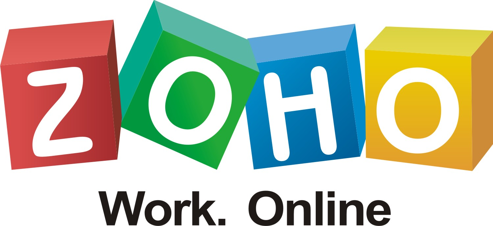

Ofimàtica web
Els programes informàtics que solucionen el tractament automàtic de la informació donant resposta a tasques d’oficina rutinàries com ara gestionar documents de text, realitzar càlculs, portar una agenda d’activitats o fer presentacions multimèdia s’anomenen aplicacions ofimàtiques o paquets ofimàtics. L’ofimàtica és el conjunt de tècniques, aplicacions i eines informàtiques que s’utilitzen en funcions d’oficina per optimitzar, automatitzar i millorar els procediments o les tasques relacionades.
L’ofimàtica web (també anomenada ofimàtica 2.0) és el servei en línia que permet editar un text, un full de càlcul o una presentació. Disposa de característiques avançades com són l’edició compartida de documents, la publicació en obert de documents a Internet i una forta integració amb el correu electrònic.
Actualment, el paquet ofimàtic més utilitzat és Microsoft Office. El fet que sigui dels més emprats i que, a més, treballi amb formats d’arxius tancats, fa que la resta de paquets ofimàtics tinguin el seu propi format d’arxius i alhora contemplin la necessitat de ser compatibles amb els formats de Microsoft Office. Dins dels paquets ofimàtics de pagament també podem destacar iWork, el paquet ofimàtic d’Apple. En el cas dels paquets ofimàtics de codi obert, podem destacar Sun Microsystems OpenOffice, així com LibreOffice, que és una bifurcació de l’OpenOffice.
Per últim, és important destacar que cadascuna d’aquestes aplicacions ofimàtiques, al contrari que les aplicacions ofimàtiques web, necessiten una instal·lació local a cada ordinador on s’han d’utilitzar.
Introducció a les aplicacions d'ofimàtica web
La majoria d’aquests paquets ofimàtics estan formats per programes destinats a processar textos, fer càlculs o fer presentacions multimèdia. La gran diferència entre un paquet ofimàtic estàndard (o també anomenat d’escriptori) i un de web és que l’espai de treball on es desen els documents dels usuaris es troba en un servidor web i no pas en l’ordinador local de l’usuari. Per tant, no importa el tipus d’ordinador amb el qual treballeu, ni la plataforma de sistema operatiu que tingueu, tan sols es necessita un navegador i connexió a Internet per accedir als documents i als serveis ofimàtics d’aquests programes.
El principal avantatge d’aquests tipus de programes i la seva creixent popularitat es deu tant a la deslocalització de l’oficina com a la possibilitat de treballar col·laborativament. Per a un treballador d’una empresa, que ha de fer sovint reunions fora de la seva oficina, resulta molt còmode saber que l’última versió d’un document la té al servidor d’Internet i no ha de portar versions en dispositius d’emmagatzematge extern com discos o llapis de memòria (pen-drives).
També és molt útil utilitzar aquest tipus d’aplicacions quan es tracta de crear documents i revisar-los entre més d’una persona. La compartició de documents i la gestió de l’accés a la informació permet estalviar molt de temps i maldecaps per detectar les últimes modificacions d’un document. Resulta molt més àgil que el procés d’adjuntar arxius i enviar-los per correu electrònic a tota una llista de contactes, esperant el retorn per veure’n les modificacions, per exemple.
La majoria d’aplicacions d’ofimàtica web del mercat:
- Permeten tenir els documents en un servidor web.
- Permeten el treball col·laboratiu.
- Permeten controlar qui accedeix a quina informació.
- Són compatibles amb diferents formats de documents (HTML, DOC, TXT, RTF, ODT, PPT, XLS o PDF).
Característiques dels paquets ofimàtics web
Els paquets d’ofimàtica web més coneguts actualment són el Google Drive, el Zoho Documents, el Feng Office i el ThinkFree. Aquests quatre productes (vegeu la taula) estan disponibles en la seva versió estable definitiva i, per tant, són plenament funcionals pels nostres objectius d’aprenentatge.
| Paquet ofimàtic web | Adreça web | |
|---|---|---|
| Google Drive | http://drive.google.com | |
| Zoho | http://www.zoho.com | |
| Feng Office | http://www.fengoffice.com | |
| ThinkFree | http://www.thinkfree.com |
Hi ha productes de codi obert, com ara Feng Office, que faciliten la migració de les dades i afavoreixen la creació d’una comunitat de programadors i usuaris que milloren el producte dia rere dia. Zoho i ThinkFree estan més orientats a donar serveis d’empresa i, juntament amb Feng Office, es poden instal·lar als servidors locals.
Característiques de Google Drive
El Google Drive és un servei de Google que permet emmagatzemar arxius perquè siguin accessibles des de qualsevol ordinador o dispositiu mòbil en qualsevol lloc. Per tant, qualsevol actualització serà visible en la resta de dispositius amb els quals accedim al nostre compte de Google (aquesta actualització es realitza de forma transparent per l’usuari).
-

- Google Drive, un dels serveis estrella de Google, es va anomenar en un primer moment Google Docs
Més enllà d’emmagatzemar arxius, dins d’aquest servei de Google també trobem una suite ofimàtica en línia que ens permet crear documents de text, fulls de càlcul, presentacions i formularis, entre d’altres, que quedaran emmagatzemats directament en el Google Drive.
Característiques de Zoho Docs
Zoho Docs és una suite ofimàtica en línia que permet als usuaris la creació i edició de documents en línia sense haver d’instal·lar programari o aplicacions en l’ordinador (com en el cas de Microsoft Office).
El servei també inclou una funció per arrossegar i deixar anar arxius, a més de que totes les operacions es realitzen en una mateixa pestanya, pel que l’usuari pot treballar còmodament sense caure en possibles errors o confusions. Zoho Writer és l’element que correspon al processament de textos.
Aquesta aplicació web inclou fonts, grandària de lletra, colors de text, així com imatges de fons, revisions d’ortografia, alineació de textos, a més d’opcions de sangria. A més, els usuaris poden afegir-hi emoticones, símbols, imatges, taules, enllaços, així com peus de pàgina i, fins i tot, es poden incloure cançons i vídeos en els documents.
- 
- Zoho Suite, una bona alternativa a l'àrea de l'ofimàtica en el núvol
Si bé també es pot treballar amb fulls de càlcul, no s’hi ofereixen gaires característiques més enllà de les pròpies que ofereix el Zoho Writer. En el cas del Zoho Show, equival a la presentació de diapositives; en aquest cas, presenta un bon grapat de característiques com, per exemple, una àmplia selecció de temes de fons per escollir, així com opcions per inserir vídeos de YouTube.
Característiques de ThinkFree
- ThinkFree fou la primera 'suite' ofimàtica en línia compatible amb Microsoft Office
ThinkFree Office és una suite ofimàtica en el núvol i multiplataforma (es pot executar en un dispositiu amb Windows, Linux, Android i Macintosh). Ofereix un aspecte similar al de la suite de Microsoft Office. Inclou un processador de textos, un editor de fulls de càlcul, un programa per presentacions i un editor en format HTML.
Està disponible en diversos idiomes i combina les funcionalitats pròpies d’un paquet ofimàtic d’escriptori amb els avantatges de treballar en el núvol. Un cop ens registrem en el servei, disposarem d’1GB d’emmagatzematge per crear o compartir els nostres documents, treballar de forma col·laborativa, publicar els nostres documents a Internet (en una adreça exclusiva de thinkfree.com).
Característiques de Feng Office
Feng Office està dissenyat per oferir tot el necessari perquè un usuari pugui gestionar la seva empresa, des de l’espai necessari per emmagatzemar diferents arxius o la gestió de projectes fins a la creació de tasques i subtasques i metes o objectius dels projectes. De fet, es pot accedir a les tasques en funció de l’estat, prioritat o per aquell a qui estiguin assignades. Respecte als documents (de text i presentacions), es poden compartir, emmagatzemar o crear directament. A més, aquests documents es poden complimentar amb notes, calendaris i registres d’hores realitzades. El Feng Office també permet gestionar comptes de correu electrònic gestionant, a més, els documents adjunts.
Des del punt de vista de l’administració, Feng Office ens permet crear usuaris, grups de treball i assignar-los permisos per definir quins usuaris tenen accés a la informació que necessiten, entre d’altres coses.
- Feng Office és una solució comercial web de codi obert
Arribats a aquest punt, cal destacar que, tot i haver-hi diverses aplicacions ofimàtiques web, ens centrarem en Google Drive ja que és el més utilitzat en l’actualitat i permet compatibilitzar l’usuari amb altres serveis web que proporciona Google i que poden resultar d’interès i utilitat.
Aplicació ofimàtica web: Google Drive
Google Drive és una eina que ens proporciona un repositori en línia en el qual ubicar qualsevol tipus d’arxiu i disposar-ne sempre a través d’Internet.
Respecte als seus principals competidors, Google Drive se’n diferencia perquè disposa d’una suite d’aplicacions d’oficina incorporada on podrem editar documents, fulls de càlcul i presentacions, tot i que el document hagi estat creat en un altre programa. El servei disposa a més d’accés a un ampli ventall d’extres com són les aplicacions de tercers per crear mapes mentals o firmar documents, entre d’altres opcions.
Val a dir, a més, que la seva configuració és senzilla si ja disposem d’un compte de Google. A més, si utilitzem Gmail és senzill guardar documents adjuntats des del nostre compte de correu electrònic directament al Drive amb tan sols un parell de clics. A més també podem llegir, sense obrir-los, aquells documents que ens hagin enviat adjunts mitjançant Gmail.
L’únic imprescindible per utilitzar Documents de Google és una connexió a Internet, un navegador i un compte de Google.
Per tant, dels paquets ofimàtics que hem comentat en general, ens centrarem a partir d’ara en el Google Drive.
Accés a Google Drive
Un cop disposem d’una connexió a Internet i un compte de Google ja podrem accedir al Google Drive http://drive.google.com/. Un cop dins, se’ns obrirà la finestra principal del Drive i podrem veure les icones dels diferents documents i carpetes que hi hagi emmagatzemats (vegeu la figura) —les icones actuen com a vista prèvia del document amb el qual està vinculat.
Val a dir que l’altra via per accedir al Google Drive és mitjançant el correu electrònic web de Google. En la cantonada dreta superior de la safata d’entrada de Google podem accedir als diferents serveis vinculats als comptes de Google on, entre ells, trobem el Google Drive (veure la figura).
Configuració de Google Drive
Per facilitar el treball amb Google Drive és recomanable definir-ne els principals paràmetres de configuració. Per fer-ho, estant dins de la finestra principal, haurem d’adreçar-nos a la roda dentada que hi ha a la zona superior dreta (vegeu la figura), hi clicarem i s’obrirà un desplegable on haurem de triar l’opció Configuració.
Un cop dins de l’opció Configuració (vegeu figura) ja podrem triar, per exemple, en quin idioma volem que apareguin les diferents opcions del tauler de control del Google Drive. També se’ns ofereix la possibilitat de Convertir les càrregues, és a dir, si marquem aquesta opció, quan es pugi un document amb un format compatible amb els documents que es poden crear amb Google Drive, els documents passaran a ser editables. Si no la marquem, els documents es pujaran al Google Drive però, quan els obrim, serà mitjançant un visor de documents, això és, únicament podríem veure o llegir els continguts però no podríem modificar-los perquè no tindríem els permisos corresponents.
Per últim, un dels punts forts de tota aplicació ofimàtica web és la sincronització de les actualitzacions en els documents treballant fora de línia. Si marquem aquesta opció estem acceptant que les modificacions realitzades en els documents s’actualitzin en el document emmagatzemat en el Google Drive un cop tornem a disposar d’accés a Internet, ja sigui des d’un ordinador, un smartphone o una tauleta. Val a dir que, tal com mostra la figura, l’edició dels documents guardats al Google Drive i la posterior sincronització s’ha de realitzar mitjançant el navegador Google Chrome amb la corresponent instal·lació prèvia de l’aplicació que permetrà aquestes accions.
Per últim, hi ha la possibilitat que totes les imatges que s’incrustin en els documents residents a Google Drive hi quedin emmagatzemades però, en aquest cas, en una carpeta a part.
Google Chrome és un navegador web desenvolupat per Google i compilat a partir de diversos components i infraestructures de desenvolupament d’aplicacions de codi obert.
Ús de Documents de Google Drive
Un cop hem entrat a l’entorn de Google Drive, clicant en el botó vermell Nou de la zona superior esquerra de la finestra principal, tant podem pujar un document des del nostre ordinador o dispositiu mòbil com crear un nou document. També, mitjançant el botó Nou tenim la possibilitat de crear una carpeta (seleccionant Carpeta) per organitzar els documents que tinguem emmagatzemats al Drive, pujar arxius i carpetes senceres (seleccionant Càrrega de fitxers i Càrrega de carpetes, respectivament) i presentacions multimèdia (seleccionant Presentació).
Tal com mostra la figura, l’apartat Més ens dóna accés a altres tipus de documents per crear com, per exemple, formularis (Formularis de Google), dibuixos (Dibuixos de Google) o mapes (Google My Maps). Per últim, tenim l’opció d’accedir a un ampli ventall d’aplicacions de Google que ens permeten crear documents de formats diferents als que s’ofereixen per defecte al Google Drive.
Si bé mitjançant el botó Nou tenim l’opció de pujar documents (Càrrega de fitxers) també podem arrossegar els arxius des de l’explorador d’arxius del nostre ordinador fins al navegador web on tinguem obert el Google Drive (vegeu la figura).
Val a dir que també tenim la possibilitat de pujar carpetes senceres de la mateixa manera que fem amb els documents, ja sigui mitjançant l’explorador d’arxius o arrossegant-les fins l’explorador web. Un cop pujats els documents, ja podem començar a editar-los en línia afegint-hi continguts o modificant-ne els que ja hi hagi. Tota modificació realitzada quedarà emmagatzemada automàticament en el document a mesura que hi anem treballant.
Creació i gestió de documents de text
Estant dins del Google Drive podem pujar documents que ja tenim emmagatzemats en el nostre ordinador per editar-los en línia i que, alhora, hi quedin guardats, com també podem crear-ne de nous mitjançant el botó vermell Nou. Haurem de sol·licitar, doncs, la creació d’un document de Google (document, full de càlcul, presentació…).
El processador de textos que integra Google Drive està basat en Writely, un antic processador de textos amb una interfície gràfica molt similar a la dels diferents processadors de textos que podem comprar, o bé descarregar en el cas de les aplicacions ofimàtiques lliures. La principal diferència amb els processadors de textos instal·lables és que disposen d’una oferta d’eines major que la que pot oferir un processador de textos en línia (vegeu figura).
El Writely era un processador de text individual en xarxa creat per la companyia de programari Upstartle que fou llançat al mercat l’any 2005. Les seves característiques originals incloïen un lloc per l’edició col·laborativa de textos, a més de controls en el seu accés.
Les seves característiques principals, seguint d’esquerra a dreta el menú, són:
1. Fitxer: permet crear nous documents, canviar-ne el nom, desar, imprimir i mostrar com a pàgina web, així com descarregar i revisar (dues operacions, aquestes darreres, no habituals dels processadors de text d’escriptori local), vegeu la figura.
L’opció Baixa com a s’utilitza quan volem desar una versió del document web en un format accessible localment. Per altra banda, quan volem compartir un document amb algú que no té compte Google o que encara no està habituat a treballar en format web, podem descarregar el document en el format que aquella persona utilitza normalment i enviar-li adjunt en un correu electrònic, o bé aprofitar que ja hi ha aquesta opció i clicar sobre Envia per correu electrònic com a fitxer adjunt… (vegeu figura).
2. Edita: permet fer i desfer operacions sobre el document, retallar, copiar, enganxar, seleccionar tot el text, cercar i reemplaçar.
Els documents de Google Drive inclouen el servei Talkback que ajuda als usuaris invidents tot llegint per ells el text.
3. Visualitza: permet veure el document en vista normal, amplada fixa o pantalla completa.
4. Insereix: permet inserir imatges, equacions (hi ha un petit editor d’equacions), dibuixos (existeix un petit editor gràfic), enllaços web, taules, comentaris i notes al peu.
5. Format: disposa d’alguns estils predefinits com barrat, superíndex o subíndex i diferents alineacions (dreta, esquerra, justificat…).
6. Eines: té un corrector ortogràfic i un cercador de paraules al web.
7. Taula: per inserir taules, amb les seves files i columnes.
8. Complements: permet navegar per la galeria d’extensions i clicar en aquelles que vulguem afegir.
9. Ajuda: ajuda sobre l’ús del programa.
Creació i gestió de fulls de càlcul
Un full de càlcul és un document electrònic que s’utilitza pel processament de dades numèriques, que es pot utilitzar tant per escriure fórmules per realitzar càlculs com per realitzar un seguiment de dades i automatitzar processos de càlcul.
Els complements són extensions que afegeixen funcionalitats i plantilles a l’editor de text, presentacions i fulls de càlcul.
Tal com mostra la figura, amb Google Drive es poden crear els fulls de càlcul a més d’importar i exportar dades amb diferents formats (XLS de MS Excel, ODS d’Openoffice Calc i formats genèrics com CSV i TXT). Per crear un full de càlcul amb Documents de Google heu de clicar a Nou i després escollir Fulls de càlcul de Google.
Com en el cas del processador de textos, en els fulls de càlcul de Google també tenim accés als complements mitjançant l’apartat Complements de la barra superior. Si hi accedim, podem navegar per la galeria d’extensions i clicar en aquelles que vulguem afegir.
Creació i gestió de presentacions multimèdia
Per crear una presentació, és a dir, un conjunt de diapositives que integri imatges, textos, música de fons, etc., heu de clicar a Nou i després escollir Presentació de Google (vegeu la figura).
Trobareu un menú amb les següents opcions, d’esquerra a dreta:
1. Fitxer: conté les operacions bàsiques de crear una presentació nova, obrir-ne una de preexistent, anomenar i desar, canviar el nom i imprimir (en PDF). També estan integrades les operacions de carregar i descarregar presentacions. És a dir, l’exportació de presentacions la trobeu en aquesta opció del menú amb el nom Baixa la presentació com a.
2. Edita: permet fer i desfer, retallar, copiar i enganxar i utilitzar un tema predeterminat o escollir un fons d’un color o d’una imatge en particular.
3. Visualitza: permet visualitzar la reproducció de la presentació i definir amb quina aproximació (més a prop o més lluny) volem veure la presentació.
4. Insereix: permet inserir dins de cada diapositiva requadres de text, imatges, dibuixos i taules. És força interessant la utilitat per inserir vídeos. Apareix una finestra amb un buscador de vídeos directament sobre YouTube, que s’enganxen directament sobre la diapositiva.
5. Diapositiva: per crear una nova diapositiva dins de la presentació, duplicar l’última, eliminar-la o afegir notes no visibles a la presentació. També dóna la possibilitat d’ampliar o reduir el zoom de la imatge (les tecles ràpides són Ctrl+Shift+cursor dret o cursor esquerre).
6. Format: permet definir els diferents formats tipogràfics pels quadres de text que s’introdueixin dins de la presentació.
7. Organitza: dóna opcions per col·locar els elements de la diapositiva en diferent ordre (a dalt, al mig, centrat, al davant, al fons…).
8. Eines: dóna accés a una cerca vinculada a Google d’elements per inserir dins de la presentació. A més, també dóna accés a un diccionari i a la possibilitat de crear un diccionari personalitzat.
6. Taula: permet inserir una taula, moure-la, inserir files i columnes així com eliminar-les.
7. Ajuda: opció d’ajuda per utilitzar l’aplicació.
Per visualitzar la presentació hem de clicar el botó blau que posa Inicia la presentació que es troba per sota del nom d’usuari, tal com mostra la figura.
Creació i gestió de formularis
Mitjançant els formularis en línia podem realitzar fàcilment enquestes o una selecció d’opcions de forma guiada. Un cop enviat el formulari, les respostes es registren de forma automàtica en un full de càlcul de Google, estalviant-nos la feina de recopilar i tenint-ho tot mastegat a més d’analitzar el resultat del que s’ha preguntat.
Per crear un formulari heu d’anar a l’opció del menú Nou i després seleccionar Formularis de Google. Apareix un entorn de treball com el de la figura i la figura.
Depenent de la informació que convingui recol·lectar podeu anar afegint diferents tipus de preguntes. Aquestes tenen:
- Un títol.
- Un text d’ajuda: és opcional, surt en un color una mica més suau, a sota del títol de la pregunta, a mode d’explicació o anotacions sobre la pregunta.
El tipus de pregunta pot ser:
- Text: una casella amb text d’una línia per omplir.
- Paràgraf: un requadre de text per omplir una resposta llarga, de més d’una línia.
- Múltiples respostes: apareix un botó d’opció (radio button) per cada opció (pot ser múltiple) que especifiquem. Les opcions són incompatibles.
- Quadres de verificació: apareixen tantes caselles per marcar com opcions escrivim. Es pot marcar més d’una opció al mateix temps (vegeu la figura figura).
- Llista: apareix un desplegable (com l’utilitzat per escollir el tipus de pregunta del formulari de Google Docs). Només es pot escollir una opció.
- Escala: va bé utilitzar les escales per fer tipus de preguntes la valoració de les quals es pot graduar, per exemple en una enquesta de satisfacció (1 poc satisfet, 5 molt satisfet) (Vegeu la figura).
- Quadrícula: semblant a les escales, però amb les preguntes agrupades en una taula (vegeu la figura).
Podem afegir altres elements dins del formulari com una capçalera de secció o un salt de pàgina (en el cas que vulgueu fer un formulari amb més d’una pàgina, per qüestions d’organització). Aquests dos elements els podeu afegir clicant el botó que hi ha a dalt de la pàgina, dins del requadre blau, Afegeix un element (vegeu la figura).
Un cop ja teniu configurats tots els elements que voleu integrar dins del formulari heu de clicar el botó Fet i, a continuació, desar-lo, fent clic al botó Desa.
Un cop hem acabat de definir el formulari de Google, ja podem compartir-lo, ja sigui enviant l’enllaç per correu electrònic o compartint-ne l’adreça per les principals xarxes socials, tal com mostra la figura.
També podem veure el formulari resultant mitjançant l’accés que hi ha en la barra superior (com a la figura).
Els formularis actius sempre acaben amb un botó Envia (com el de la figura).
Quan l’usuari ha omplert les caselles i opcions i clica el botó Envia, es crea automàticament un full de càlcul amb el mateix nom que el formulari i cada fila emmagatzema dades introduïdes per usuaris diferents.
Totes les respostes que s’introdueixen i són enviades a través del formulari queden emmagatzemades en un full de càlcul de Google associat a aquest formulari. Val a dir que, tot i que ja s’hi hagin introduït respostes, sempre podem tornar a editar-lo o visualitzar-lo accedint a l’opció del menú Formulari, Edita el formulari o Vés al formulari actiu (vegeu la figura).
Connectar noves aplicacions al Google Drive
Si cliquem Connectar més aplicacions tindrem accés a una àmplia gamma d’aplicacions integrades a Google i que, quan cliquem en una d’elles, aquesta es connectarà i apareixerà en el menú Crear de Google Drive.
Val a dir que hi ha un avantatge afegit ja que, en tractar-se d’aplicacions connectades a Google, tots els arxius creats en elles quedaran emmagatzemades directament en el nostre Drive i estaran, per tant, disponibles des de qualsevol dispositiu i preparades per ser utilitzades.
Quan accedim a l’opció Connectar més aplicacions se’ns obrirà una finestra (vegeu la figura) on podrem veure totes les aplicacions que podem triar i instal·lar.
Es tracta d’aplicacions que es poden connectar a Google Drive per accedir-hi directament. Les que apareixen amb una franja verda i un símbol de validar a la cantonada superior esquerra són les que ja tenim instal·lades.
Ara bé, és tan gran el volum d’aplicacions que hi ha disponibles que per trobar una aplicació que s’ajusti a les nostres necessitats disposem d’un desplegable que ens permet buscar les aplicacions organitzades per categories (vegeu la figura).
Si escollim, per exemple, la categoria Productivitat, trobarem les aplicacions que s’han definit sota aquesta categoria. Si passem el ratolí per sobre de cadascuna d’aquestes aplicacions, obtindrem una breu descripció de l’aplicació i podrem connectar-la —i valorar-la en el cas que ja la tinguem connectada al nostre Google Drive—, tal com mostra la figura.
Si cliquem sobre l’aplicació obtindrem una descripció més detallada sobre el seu funcionament, els comentaris dels usuaris i tota la informació necessària. També podem clicar per instal·lar l’aplicació. En aquest últim cas, ens apareixerà una confirmació de la correcta instal·lació de l’aplicació.
Un cop l’aplicació estigui instal·lada, automàticament s’obrirà i quedarà accessible des de Google Drive. A més, tal com mostra la figura, tot allò que creem mitjançant aquesta aplicació quedarà emmagatzemat dins del nostre espai de Google Drive.
Treball col·laboratiu amb Google Drive
Google Docs és una suite ofimàtica en línia dins de Google Drive que ens permet la creació i el treball col·laboratiu en l’edició d’un mateix document per part de diferents usuaris.
Per compartir un document perquè més usuaris el puguin editar (o comentar) heu de definir els permisos d’edició. Per fer-ho, és tan senzill com adreçar-se a l’opció que hi ha en la zona superior dreta i introduir els noms o els correus electrònics de les persones amb qui volem compartir el document (vegeu la figura).
Val a dir que, al costat del quadre de text on introduïm el nom o el correu electrònic de l’usuari a qui volem convidar perquè pugui tenir accés al document, podem definir quin grau d’accés volem donar-li al document. És a dir, podem donar-li drets d’edició perquè pugui escriure i/o esborrar el contingut del document compartit i introduir-hi comentaris.
En el cas que no volguéssim donar permisos d’edició a d’altres usuaris però sí que ens interessés que puguin llegir el document i comentar-ne els continguts, podem atorgar-los permisos per comentar, o bé, senzillament per llegir el document i prou (vegeu la figura).
També, a l’hora de compartir un document o una carpeta podem definir els permisos de privacitat, que ens permeten restringir l’accés. Hi ha tres opcions:
- Tothom que tingui l’enllaç: tothom que navegui per Internet i tingui l’enllaç hi pot accedir.
- Restringit: només hi poden accedir les persones afegides al document.
- Restricció per domini: en el cas que el correu estigui associat a un domini concret, tothom que pertanyi al mateix domini i tingui l’enllaç hi podrà accedir. Exemple: si l’usuari que comparteix pertany al domini ioc.cat, tots els usuaris amb aquest domini hi podran accedir a través de l’enllaç.
A tot això, dins del quadre per executar la compartició del document, tenim un enllaç anomenat Opcions avançades que ens dóna accés a facilitar la compartició i ampliar-ne les vies de compartició. En aquest cas, tant podem compartir l’enllaç d’accés al document compartit mitjançant les principals xarxes socials com afegir un missatge juntament amb l’enllaç d’accés al document compartit (vegeu la figura).
Per últim, un cop els usuaris ja tenen accés al document compartit, com a propietaris del document (aquest rol és el que ens permet enviar les invitacions per editar conjuntament el document) també podem modificar els drets d’accés al document. És a dir, podem canviar els drets d’accés d’un usuari perquè passi de poder editar el document a, per exemple, únicament llegir el contingut i introduir-hi comentaris, tal com mostra la figura.